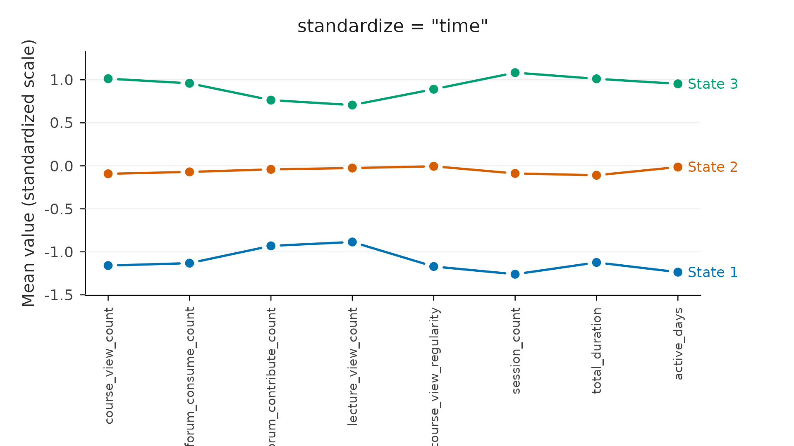
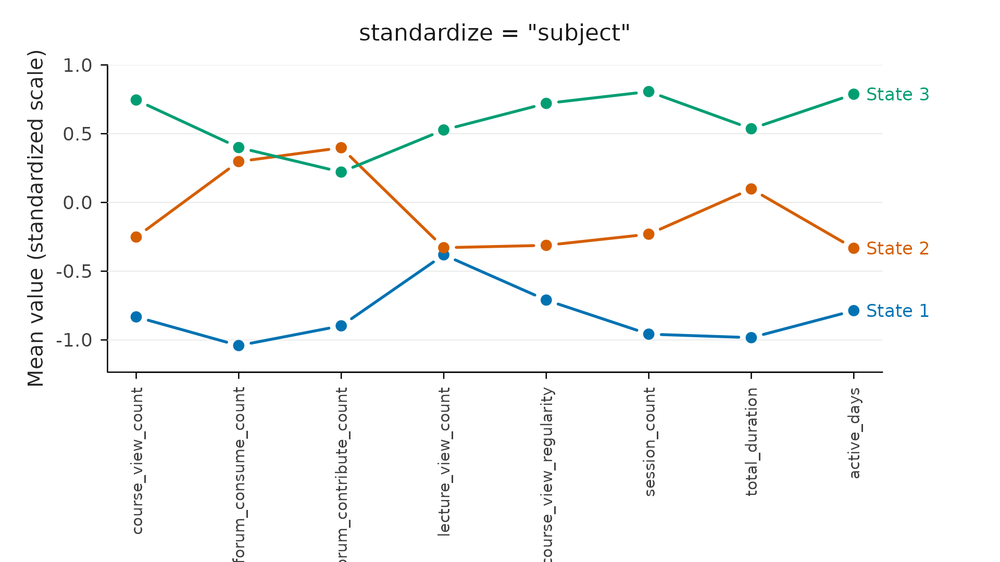

Standardization: how it changes the states
Source:vignettes/standardization.Rmd
standardization.RmdLongitudinal data are nested: every measurement belongs to a subject, and every subject is measured repeatedly over time. One observation therefore sits inside two groupings at once, the people measured at the same moment and the times the same person was measured, and its value only means something against one of them. Two hundred forum reads is a lot for a quiet student and ordinary for a busy one, and it is high in a slow week and unremarkable in a busy one. There is no scale-free measure of how engaged an observation is until you fix a reference: relative to whom, or relative to when.
Studies pick a level of that nesting on purpose. Comparing students against their peers at each occasion is the inter-personal reading: Saqr and López-Pernas (2021) bin engagement by course and describe who is active, average, or disengaged relative to the cohort at each point. Comparing a student against their own history is the intra-personal reading: Saqr and López-Pernas (2025) follow within-person change, asking whether a student rises or falls from their own baseline rather than where they stand in the cohort. Neither is more correct; they answer different questions.
The standardize argument is where VaSSTra makes that
choice. It puts the indicators on a common scale before clustering
observations into states, and the choice is not a formality: it decides
what the states are about. Standardizing within each time point
asks who is high or low relative to their peers at that
moment. Standardizing within each subject asks who is high or
low relative to their own baseline. Not standardizing
at all lets the indicator with the largest raw numbers dominate. This
article shows how much the resulting states move when you change it.
The four options
standardize z-scores each indicator within a
grouping:
| Value | Groups by | The state reflects |
|---|---|---|
"time" |
each time point | standing relative to peers at that moment (the default) |
"subject" |
each subject | deviation from a person’s own baseline over time |
"global" |
the whole sample | standing relative to the overall mean and spread |
"none" |
(no grouping) | the raw values, so the largest-scale indicator dominates |
The choice is substantive. "time" and
"global" are inter-personal: they compare people
to each other. "subject" is intra-personal: it
compares a person to themselves, so a student who is always highly
active but dips mid-course reads as a drop rather than as
still above average. "none" is rarely what you
want unless the indicators are already comparable.
A dataset where it matters
The built-in engagement data ship pre-standardized (the
_z columns), so to see the effect we use the
raw count columns, which live on very different scales:
from a handful of forum posts to thousands of seconds of duration.
raw_indicators <- c(
"course_view_count", "forum_consume_count", "forum_contribute_count",
"lecture_view_count", "course_view_regularity", "session_count",
"total_duration", "active_days"
)Fitting the same states four ways
We estimate three states with k-means on the raw indicators, changing
only standardize; the method, count, and seed are held
fixed, so any difference is the rescaling. K-means is used on purpose:
it clusters by Euclidean distance, so it reacts directly to scale (which
is what standardize controls) and separates states by
profile shape. The default LPA models each indicator’s variance
separately, so it barely reacts to standardization and would hide the
effect this article is about.
fits <- list()
for (s in c("none", "global", "time", "subject")) {
fits[[s]] <- step1_states(
engagement, variables = raw_indicators,
n_states = 3, method = "kmeans", standardize = s, seed = 1
)
}Pull each scheme’s state assignment out once, to compare them below:
state_none <- as.data.frame(fits[["none"]])$state
state_global <- as.data.frame(fits[["global"]])$state
state_time <- as.data.frame(fits[["time"]])$state
state_subject <- as.data.frame(fits[["subject"]])$stateState sizes move
cbind(
none = table(state_none),
global = table(state_global),
time = table(state_time),
subject = table(state_subject)
)
#> none global time subject
#> State 1 311 256 263 287
#> State 2 541 526 524 395
#> State 3 284 354 349 454The three groups are carved differently under each scheme: the balance shifts by dozens of students.
Assignments reshuffle
The clearest measure is how much the membership changes. The
adjusted Rand index (ARI) compares two groupings of the
same students by looking at every pair of them and asking
whether the two solutions agree: either both put the pair in one state,
or both keep them apart. It is 1 when the groupings are
identical and about 0 when they agree no more than
chance would predict. It ignores the state labels: when a
scheme is refitted, “state 1” and “state 3” may swap names, and ARI
compares only who is grouped with whom, not what the group is called.
Here it compares the other three schemes with the default,
"time":
c(
none = mclust::adjustedRandIndex(state_none, state_time),
global = mclust::adjustedRandIndex(state_global, state_time),
subject = mclust::adjustedRandIndex(state_subject, state_time)
)
#> none global subject
#> 0.377 0.924 0.059"global" agrees closely with "time": both
compare people to each other, so on these data they land in nearly the
same place. "subject" barely agrees at all. Because it
removes each person’s baseline, it groups students by how they
change rather than how active they are, and most land in a
different state. "none" also diverges, but for the opposite
reason: it is following total_duration’s raw scale.
The states themselves
The profile plots show what each scheme calls a state. Under
peer-relative standardization ("time") the three states are
an ordered engagement ladder: three roughly parallel
lines at high, middle, and low levels across every indicator, so a state
is “more” or “less” engaged. Under within-subject standardization
("subject") the lines cross. Because each
person’s overall level has been removed, the states no longer stack by
level but separate on which activities a student is above or
below their own baseline on. The same three-way split, but about a
different thing.
plot(fits[["time"]], type = "profile", main = 'standardize = "time"')
plot(fits[["subject"]], type = "profile", main = 'standardize = "subject"')
Which to use
-
"time"(default) when the question is comparative: who stands out at each point relative to the cohort. This is the usual choice for learning-analytics engagement data and the one the VaSSTra chapter uses. -
"subject"when the question is about change: whether a person rises, holds, or falls relative to their own baseline, regardless of their level. Useful when absolute level is a nuisance (e.g. trait differences you want to factor out). -
"global"when a single overall scale is appropriate and time points are not meaningfully different populations. -
"none"only when the indicators are already comparable (as theengagement_zcolumns are). Otherwise the largest-scale variable silently takes over.
When in doubt, fit more than one and compare the states directly, as above. The ARI tells you how much the choice matters for your data, and the profile plots tell you what each choice means.